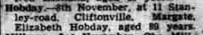
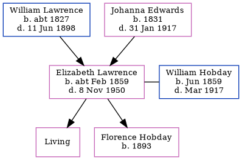

Elizabeth Hobday (née Lawrence) cFeb 1859 - 1950
[ Home ] | [ Calendar ] | [ Surnames Index ] | [ Errors ] | [ Family History ]The child of William Lawrence (a harbour labourer) and Johanna Edwards, Elizabeth Lawrence, the great-great-aunt of Nigel Horne, was born in St Lawrence, Thanet, Kent, England c. Feb 18591,2,3,4,5, was baptised there on 24 Apr 1859 and also married William Hobday (an ironmonger's assistant with whom she had 2 children: Ethel Elizabeth and Florence Evelyn, along with 1 surviving child) there on 19 Mar 1882.
During her life, she was living on Chapel Lane, St Lawrence, Thanet, Kent, England on 7 Apr 18612; at 3 Lorne Road, St Lawrence in Thanet on 31 Mar 19016 (when she was living with her) - less than a mile from her mother Johanna Edwards who was living at 3 Lorne Road, St Lawrence in Thanet and her nephew Edward James S who was living at 2 Lyle Terrace, St Lawrence in Thanet -; and at 16 Bloomsbury Road, Ramsgate, Kent on 2 Apr 19117 (when she was living with her) - less than a mile from her mother Johanna Edwards who was living at 16 Bloomsbury Road, Ramsgate, Kent, her niece Emily Lawrence who was living at 13 Ashburnham Road, St Lawrence in Thanet -, her great-niece Lilian Florence, great-nephew Frederick Cowell and great-nephew Charles Cowell who were living at 13 Ashburnham Road, St Lawrence in Thanet -, her brother John who was living at 43 Ashburnham Road, St Lawrence in Thanet - and her nephew Edward James S who was living at 2 Clifton Road, St Lawrence in Thanet -.
She died on 8 Nov 1950 at 11 Stanley Road, Cliftonville, Kent.
Parents
- William was born c. 1827
- Johanna Brooker was born in 1831
Children
- Florence Evelyn was born in 1893
Citations
- 1861 England Census Online publication - Provo, UT, USA: The Generations Network, Inc., 2005.Original data - Census Returns of England and Wales, 1861. Kew, Surrey, England: The National Archives of the UK (TNA): Public Record Office (PRO), 1861. Data imaged from the National
- 1861 England, Wales & Scotland Census - Findmypast (was age 2 and the daughter of the head of the household)
- 1901 England Census Online publication - Provo, UT, USA: The Generations Network, Inc., 2005.Original data - Census Returns of England and Wales, 1901. Kew, Surrey, England: The National Archives of the UK (TNA): Public Record Office (PRO), 1901. Data imaged from the National
- 1911 England Census Online publication - Provo, UT, USA: Ancestry.com Operations, Inc., 2011.Original data - Census Returns of England and Wales, 1911. Kew, Surrey, England: The National Archives of the UK (TNA), 1911. Data imaged from the National Archives, London, England.
- England & Wales births 1837-2006 - Findmypast
- 1901 England, Wales & Scotland Census - Findmypast (was age 42 and the wife of the head of the household)
- 1911 Census for England & Wales - Findmypast (was age 49 and the wife of the head of the household)
Media
Thanet Advertiser - 14 Nov 1950

England & Wales marriages 1837-2008 - BMD/M/1882/1/AZ/000140/178
Kent, Canterbury Archdeaconry marriages 1538-1928 - GBPRS/CANT/M/97022027/2
England Marriages 1538-1973 - R_848394405/2
England & Wales deaths 1837-2007 - BMD/D/1950/4/AZ/000478/087
England Births & Baptisms 1538-1975 - R_885343461
Kent Baptisms - GBPRS/CANT/B/96404156
England Births & Baptisms 1538-1975 - R_884654021
1901 England, Wales & Scotland Census - GBC/1901/0007448828
1911 Census for England & Wales - GBC/1911/RG14/04526/0257/2
Family Tree
Map
Generated by ged2site. Last updated on Jul 3, 2024
Known Issues
Death date (8 Nov 1950) has no citations
Marriage date (19 Mar 1882) has no citations
1939 UK register information missing